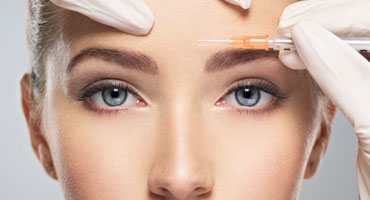
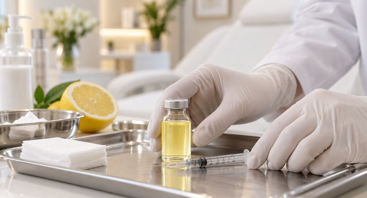

Sobre nosotros
Beauty Clinic Mallorca lleva 15 años en activo. Ofrecemos servicios integrales de estética moderna, incluyendo tratamientos faciales. Nuestra sala de tratamiento está en la planta baja, con el equipamiento más moderno y productos de primeras marcas para garantizar resultados duraderos.
Nuestra clínica está convenientemente ubicada en Plaza Bendinat, donde encontrará más médicos, oportunidades de compras, varios restaurantes y un aparcamiento subterráneo gratuito para todos los pacientes. Nuestra clínica está a solo 5 minutos en coche de Palma y aproximadamente 20 minutos de Andratx.
En Beauty Clinic Mallorca, el concepto antienvejecimiento del Dr. Erik Koerge incluye una gama de terapias mínimamente invasivas, adaptadas para satisfacer diferentes preferencias, como calidad de la piel, textura, contorno facial y tensado de la piel. Nuestro enfoque es refrescar y rejuvenecer su apariencia sin que parezca extrañamente alterado.
Con más de 20 años de experiencia en tratamientos faciales y rejuvenecimiento sin cirugía, incluyendo formación en institutos líderes, el Dr. Erik Koerge es el lugar por excelencia para tratamientos estéticos. Nuestra clínica se esfuerza por los más altos estándares en nuestra gama de tratamientos, proporcionándole los mejores resultados con la mínima interrupción en su vida cotidiana, ya sea residente o nos visite durante sus vacaciones.

Nuestros tratamientos
Consulta
Tratamiento
Resultados





Preguntas frecuentes
Arrugas de expresión
¿Quién puede recibir tratamiento de arrugas de expresión?
El tratamiento es adecuado para adultos mayores de 18 años que desean reducir la apariencia de arrugas dinámicas causadas por expresiones faciales. Es especialmente efectivo para líneas en la frente, patas de gallo y líneas del ceño fruncido. Durante su consulta en Beauty Clinic Mallorca, el Dr. Koerge evaluará su historial médico y discutirá sus objetivos estéticos para determinar si el tratamiento es apropiado para usted. Puede no ser recomendable para mujeres embarazadas o en lactancia, o personas con ciertas afecciones neurológicas.
¿Cuánto duran los resultados?
Los resultados suelen durar entre 3 y 6 meses, dependiendo de factores individuales como el metabolismo, la actividad muscular y la zona tratada. A medida que los efectos disminuyen gradualmente, la acción muscular vuelve y las arrugas pueden reaparecer. Los tratamientos de mantenimiento regulares pueden ayudar a mantener su apariencia deseada. El Dr. Koerge recomendará un programa de tratamiento apropiado durante sus citas de seguimiento.
¿Qué debo esperar durante los cuidados posteriores?
Después del tratamiento, evite frotar o masajear las áreas tratadas durante al menos 24 horas para evitar que el producto se propague a músculos no deseados. Absténgase de ejercicio intenso, acostarse completamente o agacharse durante 4 horas después del tratamiento. Puede experimentar enrojecimiento menor, hinchazón o hematomas en los puntos de inyección, que generalmente se resuelven en unas horas o días. La mayoría de los pacientes pueden volver a las actividades normales de inmediato. Los resultados completos son visibles en un plazo de 7 a 14 días.
¿Cuáles son los riesgos y efectos secundarios?
Los efectos secundarios comunes incluyen hematomas temporales, hinchazón o molestias leves en los puntos de inyección. Las complicaciones raras pueden incluir dolor de cabeza, síntomas similares a la gripe o caída temporal del párpado. El Dr. Koerge discutirá todos los riesgos potenciales durante su consulta y se asegurará de que reciba un tratamiento apropiado adaptado a sus necesidades individuales.
Rellenos de ácido hialurónico
¿Quién es un buen candidato?
Los rellenos de ácido hialurónico son ideales para adultos que buscan restaurar el volumen facial, suavizar arrugas o mejorar contornos faciales como labios y mejillas. Son adecuados para personas con signos leves a moderados de envejecimiento que prefieren el rejuvenecimiento no quirúrgico. En Beauty Clinic Mallorca, el Dr. Koerge evalúa su condición de la piel, historial médico y objetivos estéticos para recomendar el relleno de ácido hialurónico más apropiado. Los rellenos pueden no ser adecuados durante el embarazo, la lactancia o para aquellos con infecciones activas de la piel.
¿Cuánto duran los resultados?
La longevidad de los rellenos varía según el tipo de producto, el área de tratamiento y el metabolismo individual. Los resultados suelen durar entre 6 y 18 meses. Los rellenos de ácido hialurónico se descomponen gradualmente de forma natural con el tiempo. Los tratamientos de mantenimiento pueden ayudar a preservar su apariencia mejorada. El Dr. Koerge proporcionará orientación personalizada sobre intervalos de tratamiento óptimos basados en sus necesidades específicas y el relleno utilizado.
¿Qué cuidados posteriores se requieren?
Después del tratamiento con rellenos, evite tocar o aplicar presión en las áreas tratadas durante al menos 6 horas. Absténgase de ejercicio intenso, consumo de alcohol y exposición excesiva al calor (saunas, camas solares) durante 24 a 48 horas. Puede experimentar hinchazón leve, enrojecimiento o hematomas, que generalmente desaparecen en unos días. Aplicar bolsas de hielo puede ayudar a reducir la hinchazón. Duerma con la cabeza elevada durante la primera noche. Los resultados mejoran a medida que la hinchazón inicial desaparece, con una apariencia óptima visible en 2 semanas.
¿Cuáles son los riesgos potenciales?
Los rellenos generalmente son seguros cuando son realizados por profesionales experimentados. Los efectos secundarios comunes incluyen hinchazón temporal, hematomas, enrojecimiento y sensibilidad en los puntos de inyección. Las complicaciones menos comunes pueden incluir bultos, asimetría o reacciones alérgicas. Los eventos adversos graves como la oclusión vascular son raros pero requieren atención médica inmediata. El Dr. Koerge utiliza productos de primera calidad y sigue protocolos de seguridad estrictos para minimizar los riesgos y garantizar resultados óptimos para todos los pacientes.
Mesoterapia
¿Quién puede beneficiarse del tratamiento de mesoterapia?
La mesoterapia es adecuada para adultos que buscan mejorar la calidad, hidratación y textura de la piel en la cara, el cuello y el escote. Es particularmente beneficiosa para aquellos que experimentan signos tempranos de envejecimiento, líneas finas, opacidad o daño cutáneo ambiental. El Dr. Koerge en Beauty Clinic Mallorca evaluará su tipo de piel y preocupaciones durante la consulta para determinar si la mesoterapia es adecuada para usted. El tratamiento puede no ser recomendable para mujeres embarazadas o en lactancia, o personas con condiciones activas de la piel o infecciones.
¿Cuánto duran los resultados?
Los resultados de la mesoterapia varían según la condición individual de la piel, factores de estilo de vida y protocolo de tratamiento. Las mejoras iniciales en el brillo y la hidratación de la piel pueden ser visibles en unos días. Los resultados óptimos suelen requerir un curso de 3 a 6 sesiones espaciadas de 2 a 4 semanas. Los resultados pueden durar varios meses, con tratamientos de mantenimiento cada 3 a 6 meses recomendados para mantener el rejuvenecimiento de la piel y proteger contra el daño ambiental continuo.
¿Qué cuidados posteriores se necesitan?
Después de la mesoterapia, evite tocar o lavar el área tratada durante al menos 6 horas. Absténgase de aplicar maquillaje, usar productos de cuidado de la piel agresivos o exponer la piel a la luz solar directa o fuentes de calor durante 24 horas. El enrojecimiento leve, la hinchazón o las pequeñas marcas de inyección son normales y generalmente se resuelven en 24 a 48 horas. Evite el ejercicio intenso y el alcohol durante 24 horas después del tratamiento. Aplique protector solar de amplio espectro diariamente para proteger su piel y mejorar los resultados del tratamiento.
¿Hay riesgos asociados?
La mesoterapia es un procedimiento seguro cuando es realizado por profesionales calificados como el Dr. Koerge. Los efectos secundarios comunes incluyen enrojecimiento temporal, hinchazón, hematomas o molestias leves en los puntos de inyección. Raramente, los pacientes pueden experimentar infección, reacciones alérgicas o decoloración de la piel. El Dr. Koerge utiliza productos de alta calidad y se adhiere a estrictos estándares de higiene y seguridad para minimizar los riesgos y garantizar los mejores resultados posibles para todos los pacientes en Beauty Clinic Mallorca.